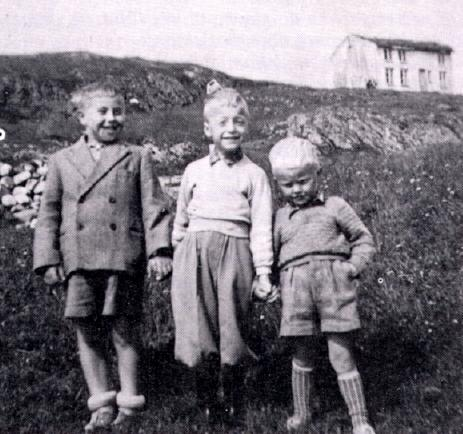
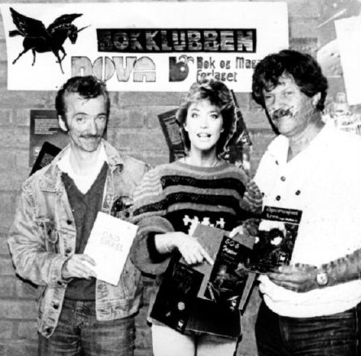
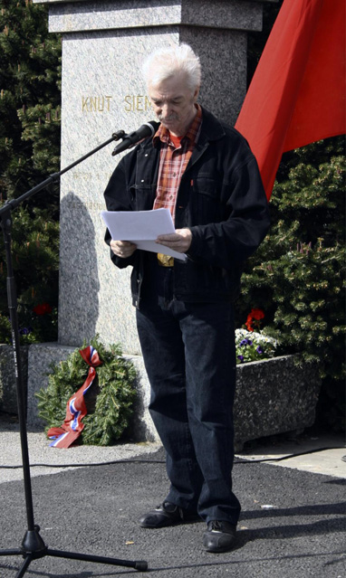
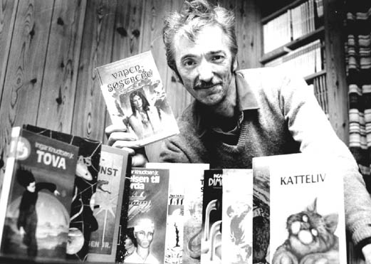
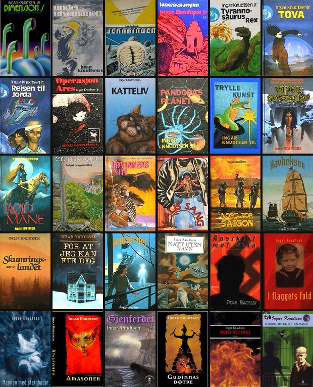

Ingar Knudtsen
Forfatter · 1944-2025
Åpne arkivet →
Artikler, brev, kommentarer og tekster skrevet av Ingar Knudtsen
Sjølbiografisk skisse av Ingar
Jeg er født på Smøla, like før jul i 1944, og alt for tidlig som et resultat av at min mor til tross for sin graviditet insisterte på å vaske ned huset til jul ...
Fra Smøla husker jeg ikke stort, for jeg flyttet til Kristiansund da jeg var fem år, og den flate øya vest i havet forbinder jeg helst med lange somre på besøk hos mine besteforeldre og min yndlingstante Mimmi, og naturligvis mine søskenbarn, og særlig min kusine Oddrun som delte min enorme interesse for rock and roll!

I min barndom og ungdom var bøker (og tegneserier!) den viktigste veien inn i fantasien, det var der eventyret fantes. Jeg var mye sjuk i oppveksten, blant annet med tuberkulose, og dager og uker og til og med måneder i senga og vanskelige tanker hadde bare en trygg fluktrute, bøkene.
Det var ikke mye bøker i barndomshjemmet, min far leste heller aviser, min mor derimot leste en del – hun elsket blant annet å lese cowboybøker!
Men i venneflokken gikk alle slags bøker og tegneserier på omgang til de var lest omtrent i filler. Fra klassikere og samtidslitteratur til science fiction og underholdningsromaner og barne- og ungdomslitteratur.
Det var jo en viss spennvidde fra Josef K til Lyn Gordon. Tidas mest populære tegneserier var like umake, det var Illustrerte klassikere og Vill Vest!
Vi var absolutt «arbeiderklasse», og jeg vokste opp i en by som var blitt bombet sønder og sammen under krigen. Gjenoppbygginga tok tid og kom ikke nødvendigvis vanlige arbeidsfolk så fort til gode. Vårt første husvære i Kristiansund var ett rom i ei brakke, fem mennesker. Min fem år eldre søster Annbjørg, min mor Agnes og far Ingar, min bestemor Ane og jeg.
Derfra kom jo forbedringa gradvis. Fra den såkalte Hoembrakka i Vågen tidlig på femtitallet til tyskerbrakke på Nordlandet og så borettslagsleilighet på Steinberget på Gomalandet 1958.
Jeg likte ikke skolen og dens formaliserte læring, jeg foretrakk å lære på egen hånd, og hadde liten sans for «oppgaver» og «tester» og «stiler» som jeg fant kjedelige og meningsløse. Allerede som tolv-trettenåring begynte jeg å lage små sketsjer og fikk i stand «hørespill» ved hjelp av en lånt Tandberg båndopptaker og med meg sjøl og mine venner på Steinberget som «skuespillere».
Jeg begynte tidlig å lese science fiction som det kom ut en del av i Norge på denne tida, og prøvde å skrive en sf-fortelling også på denne tida, den ble imidlertid aldri fullført.
Jeg levde i et sterkt radikalt politisk miljø, der de nærmeste naboene Ragnar og Margaret Hammer var aktive kommunister, og gjennom dem fikk jeg muligheten til å reise til Øst-Europa. Jeg var blant annet i Berlin lenge før muren ble reist, og våget meg da også en gang over fra øst til vest, men ble skremt av de amerikanske soldatene og nærmest sprang tilbake til det som da var Øst-Berlin!
Fjorten år gammel meldte jeg meg inn i NKU. Det skulle bli en langt viktigere hendelse enn jeg var klar over. Min politiske radikalisme ble nemlig en av flere hindringer for å komme inn i arbeidslivet. Jeg brøt riktignok med kommunistpartiet og meldte meg inn i Sosialistisk Folkeparti (forløperen til SV) i 1962, men det gjorde faktisk ikke situasjonen bedre, snarere tvert imot.
Jeg bodde på Sunndalsøra på denne tida, fra 1961 til 1966, og ble etterhvert symaskinreparatør (som Ivan i Kalis sang!). Jeg arbeidet med det i bare noen få år, samtidig som jeg var redaktør for ei månedsavis som het Vår Mening, der jeg skrev mesteparten av stoffet sjøl. Det ble min skriveskole nummer en. Samtidig begynte jeg å skrive lyrikk, og noen av disse diktene ble publisert i lokale aviser og etterhvert i såkalte motkulturelle blader.
Jeg giftet meg i 1964, nitten år gammel, med Gerd som da var sytten.
Vår første datter Vanja ble født i 1966. Vårt andre barn, Toini, ble født i 1968. Da var jeg flyttet til Kristiansund etter at butikken jeg arbeidet i gikk konkurs.
I Kristiansund var det stagnasjon i arbeidsmarkedet, og ingen jobber ledige for en symaskinreparatør. Jeg prøvde meg en kort stund som sjarkfisker, men det ble slett ingen suksess. Jeg endte gjerne med å gi bort fisk heller enn å selge den!
Gerd søkte derimot jobb som syerske på konfeksjonsfabrikken Berserk, og fikk arbeid på dagen. Slik ble jeg hjemmeværende skrivende og barnepassende husfar i ei tid da det å se en mann trille barnevogn slett ikke var vanlig.
På denne tida oppdaget jeg anarkismen, og brøt med den bevegelsen jeg hadde vært med på å grunnlegge, og som senere ble til AKP (m-l). Dette var mens den motkulturelle bølgen var på sitt høyeste, med protester mot krigen i Vietnam, og en blomstrende «opposisjonell» undergrunnskultur, der blant annet den såkalte fantastiske litteraturen – sci-fi og fantasy – var viktige litterære uttrykksformer.
Mot slutten av sekstitallet begynte jeg å skrive noveller, men først i 1971 kom den første på trykk, i det nystartede Science Fiction Magasinet som etterhvert ble til bladet NOVA.
Det var om denne tida Øyvind Myhre skrev om oss ivrige, men uerfarne «fantastiske» forfattere i et marked og en litterær kultur som slett ikke var mottakelige for vår måte å skrive på, at «bunkene med refusjonsbrev vokste ti centimeter i uka».
Siden astronomi og romfart var noe av det jeg var ganske opptatt av, prøvde jeg å bruke min viten om dette i historiene mine. Da ei av de første slike historiene jeg skrev på «alvor», nemlig «Planetfall», vant NOVA-statuetten for beste norske novelle i 1973, var det på tide å høyne ambisjonsnivået.

Tor Åge Bringsværd og Jon Bing hadde overtalt Gyldendal til å gi ut science fiction i sin Lanterne-serie, og jeg sendte uten særlig håp et manus til ei novellesamling dit. Svaret ble en overraskelse, sjøl om det tok sin tid før det kom: «Dette er noe av det beste ...» Slik begynte konsulentuttalelsen. Og konklusjonen var at dersom jeg smurte meg med litt tålmodighet ville det bli bok av manuset i 1975.
Slik begynte forfatterskapet, og slik fortsatte det med ned- og oppturer. NOVA-statuetten igjen for min første roman Jernringen som kom ut i 1976, etter at Gyldendals science fiction-serie begynte å skifte fokus og faktisk ble svært negativt preget av den alldeles fjollete debatten om såkalt «hard» og «mjuk» science fiction, der mine bøker på mange måter ramlet mellom to stoler.
Jeg begynte etterhvert å lære mer om norsk litteratur og forlagsbyråkratier og kulturmiljøer enn det jeg egentlig hadde lyst til. Sneverhet, misunnelse, lukkede miljøer. Det falt bitre ord fra flere om «kulturmafia», og jeg var på mange måter glad for at jeg befant meg langt fra bitterhetens kjerne, og skrev på mitt, ganske uavhengig av litterære trender og moter.
Men jeg oppdaget jo fort at dørene til de store forlaga hadde kikkhull med mistenksomme øyne bak, og ikke var til å åpne for hvem som helst med mistenkelig arbeiderklasse-utseende og merkelig dialekt og uvanlige litterære ambisjoner.
En episode forteller mer enn mange ord: Jeg prøvde å få gitt ut en diktsamling på Aschehoug. Jeg skrev et dikt om vårt forhold til rottene som romsterte i kjøkkenet etter at vi hadde lagt oss om nettene, og den meget intellektuelle konsulenten skrev at det jo var greit at jeg solidariserte meg med de som hadde det dårlig, men for det første virket det jeg skrev lite troverdig, og for det annet ville det vel være bedre om jeg skrev om noe sjølopplevd?
På Cappelen fikk jeg imidlertid gitt ut tre ungdomsromaner – fra min side faktisk skrevet som voksne romaner – som antakelig var langt viktigere enn jeg sjøl var klar over den gangen: Tyrannosaurus Rex, Tova – en roman fra Mars og Reisen til Jorda. Jeg har nesten ikke tall på hvor mange mennesker som har fortalt meg de senere åra at en eller alle de bøkene introduserte dem til science fiction og fantasy!
Rundt midten av åtti-tallet virket det som om forfatterskapet på mange måter var over. Jeg lette etter nye veier uten helt å finne det jeg søkte. Men en ny epoke var alt i emning, med et nyskrevet manus som begynte å sirkulere rundt til diverse forlag: Våpensøstrene. Forlag etter forlag vendte tommelen ned, men to forlag sa også ja, for senere å ombestemme seg – deriblant forlaget Oktober, der den overstrømmende første mottagelsen sto i skarp kontrast til den senere hastige retretten.
Tilfeldigheter og hell førte manuset omsider til Bladkompaniet, og siden har liksom ingen ting vært som før. En forfatter som oppfatter seg sjøl som djupt seriøs på et «underholdningsforlag» – det skulle vise seg at trilogien om amasonene (som nå er blitt en trilogi i fem bind!) var akkurat det forfatterskapet trengte for ikke bare å overleve, men bli nytt.
I Kalis sang fikk jeg skrive min første roman i det som skulle bli kalt norsk magisk realisme. Deretter fulgte en spennende litterær reise til Vietnams jungler og kvinnelige geriljasoldater i Nord for Saigon, før jeg var tilbake i Norge igjen med Skumringslandet – som jeg sjøl ser på som min mest vellykkede magisk realistiske roman. For at jeg kan ete deg var mitt forsøk på å skrive en moderne versjon av Rødhette og Ulven, der sympatien ligger hos BÅDE Rødhette og Ulven.
Min far døde, bare seksti år gammel, og jeg sluttet å bruke «junior» i navnet. Våpensøstrene markerte også den overgangen.
Min datter Toini flyttet til Oslo og begynte på det som skulle bli en ganske blomstrende karriere som sanger og gitarist. Min andre datter Vanja har prydet mange av mine bøker med sine flotte kart, og bidratt til at familien fortsatt skal bestå, med sine to barn Ronja og Audun.
Mitt politiske engasjement og mine kunnskaper og interesse for ideologier og historie resulterte i det jeg gjerne kaller min «ideologi-trilogi»: Natt uten navn, Ansiktet mot sola og I flaggets fold – bøkene om anarkismen, fascismen og kommunismen sett fra innsiden, av en av begivenhetenes «menige» deltagere.

Den siste boka, I flaggets fold, tilegnet jeg min mor, som da jeg var gutt og ungdom arbeidet i konfeksjonsindustrien, og som hadde vært «sydame» helt fra sin spedeste ungdom. Hun døde mens jeg skrev boka, våren 1998.
Kvinnene både i livet mitt og bøkene er uhyre viktige, og jeg spøker slett ikke når jeg kaller meg feminist. Åtti prosent av hovedpersonene i det jeg har skrevet har vært kvinner. Jeg tror på individet, at vi er mennesker først og så kommer alt det andre – nasjonalitet, kultur, kjønn. Mange kvinnelige lesere har uttrykt forundring over at jeg som mannlig forfatter har greid å skape troverdige kvinneskikkelser. Jeg har et enkelt, men riktig svar: jeg skildrer alle mine viktige personer som mennesker, og prøver aldri å legge klisjéaktige føringer inn i tankene og handlingene deres.
Våpensøstrene – en roman som foregår i et kvinnestyrt samfunn for tre tusen år siden – fikk enkelte mannlige lesere til å bli så sinte at jeg fikk trusler både pr. brev og over telefonen, og jeg ble blant annet kalt «kjønnsforræder». Stakkars redde gutter! På den annen side har mange, mange flere menn og gutter gitt meg utvetydige signaler om at de har stor sans for bøkene mine, og det gir jo utvilsomt et visst håp.
Historien om meg er på mange måter historien om mine bøker. De har dominert mitt liv, overtatt det, og gitt meg en stor del av min identitet.
Dersom Kali og andre makter står meg bi, er ikke min siste bok skrevet ennå.

Bøker

Ingar Knudtsen (1944–2025) ga ut 30 unike bøker mellom 1975 og 2008: romaner, ungdomsromaner, novellesamlinger og kortromaner innen science fiction, fantasy, magisk realisme, skrekk og politiske krigsromaner. I tillegg finnes fire danske utgivelser, én EPUB-utgave, to gratis PDF-utgaver og fire norske lydbøker. Noveller av Knudtsen er også oversatt til tysk, fransk og engelsk i utenlandske antologier og magasiner. Mest kjent er Amasone-serien på fem bøker, som startet som en trilogi.
Gratis nedlasting
To bøker tilgjengelig som gratis PDF-nedlasting


Begravelse
Begravelsesseremonien for Ingar Knudtsen ble holdt i Caroline Kinosenter i Kristiansund, med minneord ved Berit Jørgenvåg, Ronja R. Knudtsen, Vanja Knudtsen og Toini Knudtsen. Seremonien kan ses i opptak på egen side, der minneordene også kan leses.
Masteroppgave
Amasoner, gudinner og kvinnemakt: Feminisme og fantasy i Amasone-trilogien av Ingar Knudtsen
Med utgangspunkt i Amasone-trilogien av Ingar Knudtsen utforsker denne masteroppgava hvordan fantasy kan brukes som et medium for samfunnskritikk. Prosjektet går ut på å undersøke hvordan Amasone-trilogien spiller på både sjangerkonvensjoner og feministiske strategier for å fremme et feministisk budskap, samt i hvilken grad teksten lykkes med dette.